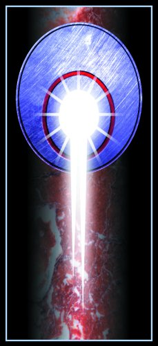

简介
通讯之星全心全意履行一个神圣的使命:保存所有星际联盟的科技资料,防止另一个黑暗时代(Dark age)的到来.通讯之星由Jerome Blake在2788年创建,它保护并研究高频脉冲发射通讯网络(HyperPulse Generator,HPG)等在黄金时代(Golden Age)发展出来的高精科技,若非通讯之星创始人的远见,这些知识早就遗失了.
在星际联盟崩溃后,Blake确立了两个伟大的职责:尽可能能多的保存可普遍使用的科技知识,防止继承国家夺取星际通讯网络并滥用它来互相攻击.
在2788 年,Blake取得了地球的控制权,并宣布地球是一个中立国家.他允诺保障那些能保证他人民和高能脉冲发射站处于中立地位的继承国家的星际通讯.继承国家的领导者们认为,开放通讯网络对他们的生存是至关紧要的,因此同意了Blake的要求.于是便诞生了通讯之星-神佑之令(Blessed Order).
Blake创建了一个严格的宗教等级制度,他作为主教(Primus)和第一环领唱者(First Circuit Precentors)管理通讯之星的事务,他还创建了一个在通讯之星成员中的秘密兄弟会来保护星际联盟的秘密不被外界探知.通讯部门这个名字已经不再适合新的组织,Blake采用了通讯之星,一个混合了通讯企业(Communications Enterprises Inc)和星光广播有限公司(Starlight Broadcasting Ltd)的名字,它还含有为星际联盟服务的意思.
Blake的远见
Jerome Blake领导了通讯之星31年,在这段时间里,他为了通讯之星的未来奠定了通讯之星的基础的哲学体系,运作方式和内部结构,他深信经由与"外界"的隔绝,通讯之星一定能保持它的纯洁,况且他还使用了严格的宗教等级制度和科学技术来达到这个目的.任何与外界讨论科学技术的行为都会受到严格的处罚,甚至会被驱逐出组织.Blake相信文明的衰败是一个神罚,继承国家将为它们的愚蠢行为受难.
显然蔓延的战火必将焚尽一切文明,除非有人能站出来保护这些科技知识,这便是Jerome Blake赋予通讯之星的最高使命:不惜一切代价保护人类知识.于是通讯之星开始成为众多优秀技师的庇护所,并在星际社会四分五裂的时候日益繁荣壮大.
在Blake 的领导下,第一环成为通讯之星的权力中心,禁止除其自身会员以外的其他人参加其会议,并且在其会员中建立了牢固的,秘密的兄弟会.在2811年,通讯之星设立了安全部门ROM,专职负责防止重要科技知识外泄,并负责制止成员叛逃到继承国家,很快的ROM成为通讯之星中恐惧与畏惧的代名词.
另一个由Blake创建的分支部门是雇佣军评估版(Mercenary Review Board),用来监视和控制雇佣军的合同,这显然超越了通讯之星之前的权限,不过各大家族的领导人都热心响应了Blake的这个建议.
在此期间,Jerome Blake继续着他的预言.在战争狂怒的围绕着他和他的世界时,Blake突然预见到战火将会继续下去,并会毁灭大量在星际联盟黄金时代诞生的高精科技,引用Blake自己的话来说,"通讯之星是保存内天体未来的唯一希望"
早期的主教
Blake 死于2819年,在此之后,Conrad Toyama作为通讯之星的主教继承了Blake的遗志.他进一步巩固了通讯之星并用律令使通讯之星成为一个整体.在这段时间里,当使用高频脉冲发射器和其他大型科技装备的时候,会举行一些仪式,用以增强诗僧(Acolyte)和领唱人作为通讯之星成员的神圣使命的信仰.另外,在通讯之星内部,信仰本应是律令范畴之内的事情,然而在Toyama的鼓励下,这种信仰超出了律令的范围,从而使人们更加相信一个观点-神圣的HPG发射器只能由通讯之星使用,并且确保没有继承国家能控制星际联盟的科技遗产.
主教Toyama亲手选出了他的继承者, Raymond Karpov.在2837年,当Toyama遭到大量打击心灰意冷时,Raymond Karpov取代了Toyama的位置.他继续着Toyama的工作,在通讯之星内部加强对Blake预言的信仰,可惜收效甚微,人们已经在拥有并拥有强大的力量的情况下忍耐了数个世纪,Karpov建议所有通讯之星的成员都穿上白袍来取代原来的灰色连衣裤-在Blake时代技工们的标准制服.引用他自己的话来说,"白色象征着Blake远见的纯洁性，并且代表了通讯之星的目标"白袍上通常装饰着取自远古科技手稿中的数学符号.
其他贡献较少的措施有-每晚在每个HPG举办的教育会议,用来讨论通讯之星的信仰和它在内天体未来中扮演的角色,Raymond Karpov在2875年因健康问题放弃了主教这一职务,但他继续为神佑之令服务,他管理着欧洲的Blake医疗中心直到2880年去世.
主教系谱
包括Blake和最近的两个继承者,通讯之星一共有14位主教.
Jerome Blake (通讯部长) 2788-2819
Conrad Toyama (Dieron领唱者) 2819-2837
Raymond Karpov (Alpha C领唱者) 2837-2875
Andrea Marteen (Arcturus领唱者) 2875-2901
Dwight Kurstin (Caph领唱者) 2901-2902
Gregori Hartford (Procyon领唱者) 2902-2910
Kari Marie Marshall (Procyon领唱者) 2910-2930
Hollings York (New Earth领唱者) 2930-2947
Adrienne Sims (Oriente领唱者) 2947-2979
Yin Takami (New Earth领唱者) 2979-2994
Allen Rusenstein (Alpha C领唱者) 2994-3006
Julian Tiepolo (Atreus领唱者) 3006-3029
Myndo Waterly (Dieron领唱者) 3029-3052
Sharilar Mori (Dieron领唱者) 3052-现在
主教概要
每个主教都对通讯之星作出了他(她)自己的贡献,早期的主教为掌握着人类命运的通讯之星打好了坚实的基础.
在Kerensky 的星际联盟防御部队离去后,Jerome Blake依靠一己之力把内天体从毁灭中拯救出来,通过恢复和控制星际联盟通讯部建造的,遍及已知宇宙的HPG网络,他向5大家族的领导人宣布通讯之星的中立地位并为之后实现那两个神圣的使命打好了基础.Blake在科技,预测,政治,经济和领导能力上展现了他超凡的能力,他在各个方面为通讯之星奠定了完美的基础.
主教Toyama和Karpov继承了Blake的遗志,从他神圣的预见中汲取力量,将通讯之星建立成今天这样神圣和善良的组织,在之后的继承者中,主教York创建了通讯之星的军事力量-通讯之星戍卫部队(ComGuard)和通讯之星后备部队(Militia),主教Sims创建了通讯之星探测部队(Explorer Corps),用来侦察超越外围星系的地区,这些事件都有详细的记录.